2 / 15 — 掴み「実は僕、人見知りなんです」
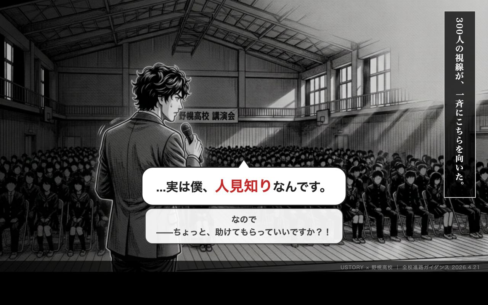
3 / 15 — 校長メッセージ
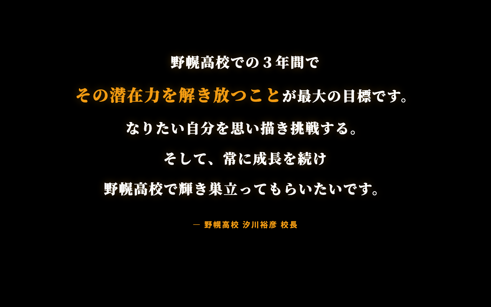
4 / 15 — 「自己理解」に対する世論の声
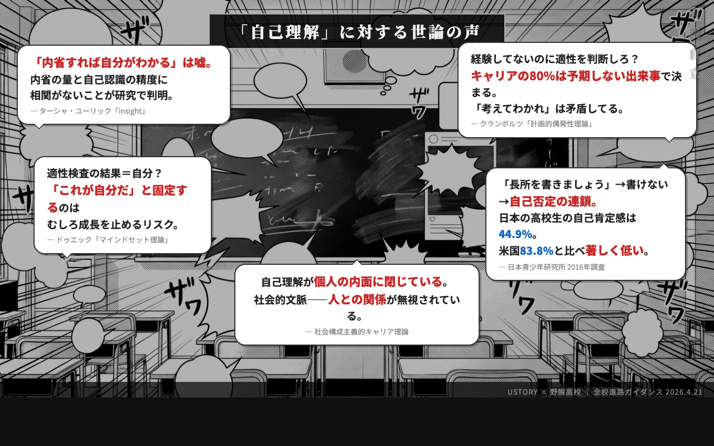
5 / 15 — 力説「本当にできることは意識していないことの中にある」
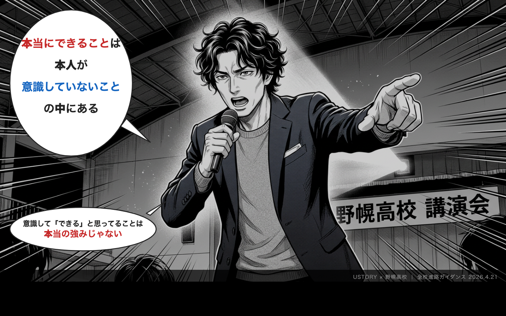
6 / 15 — 姿見の導入
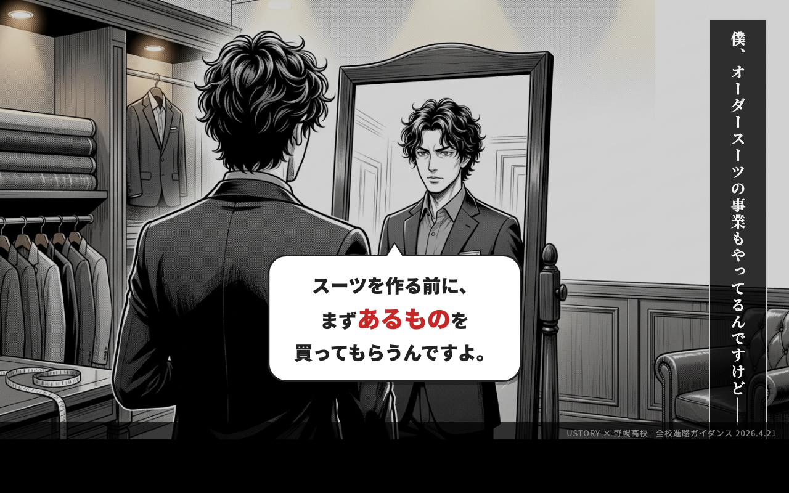
7 / 15 — 姿見の核心
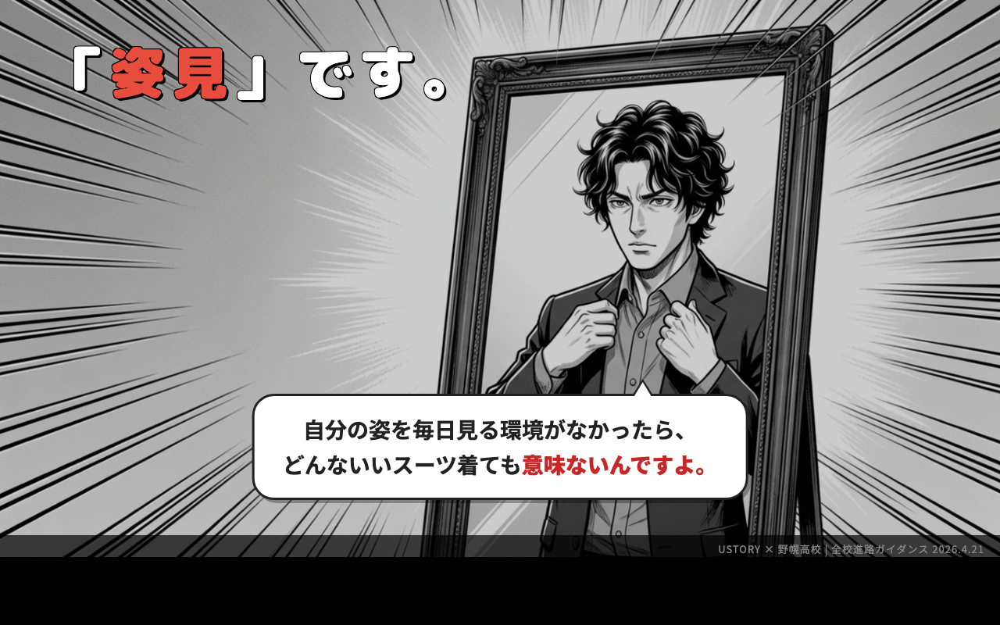
8 / 15 — 転換「内面の鏡は？」→「人」
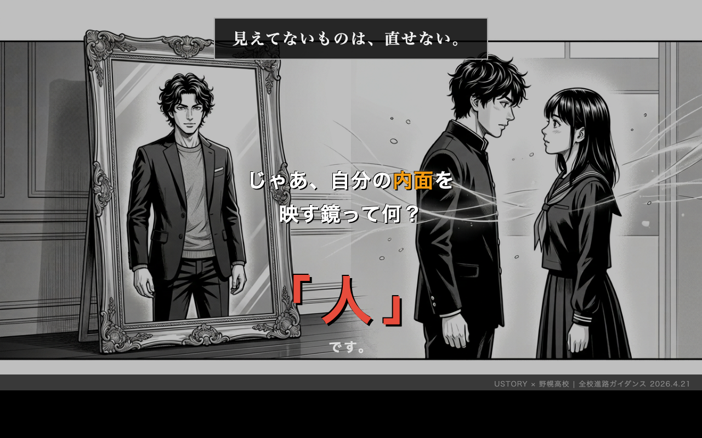
9 / 15 — 人間＝あわい
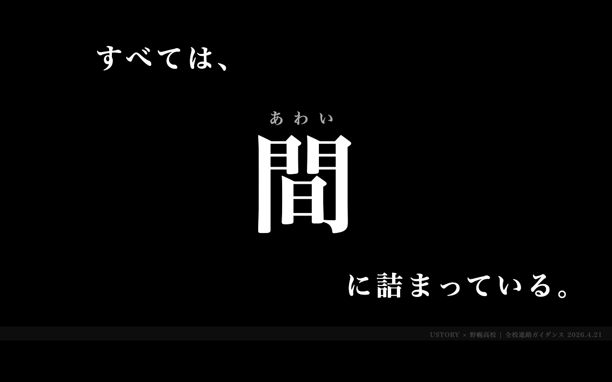
10 / 15 — キーメッセージ「すべては、間に詰まっている。」
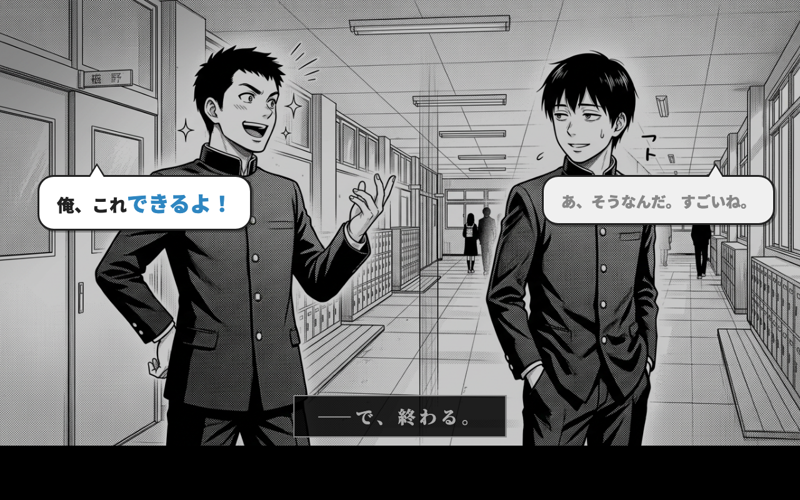
11 / 15 — 対比①「できるよ」→「すごいね」で終わる
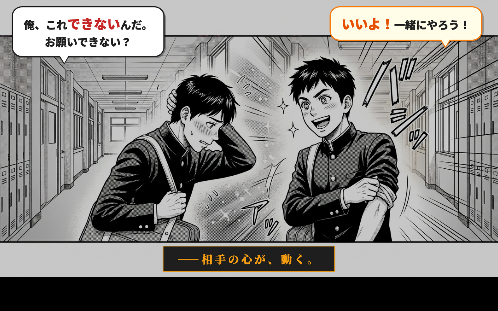
12 / 15 — 弱みを出すと強みが残る
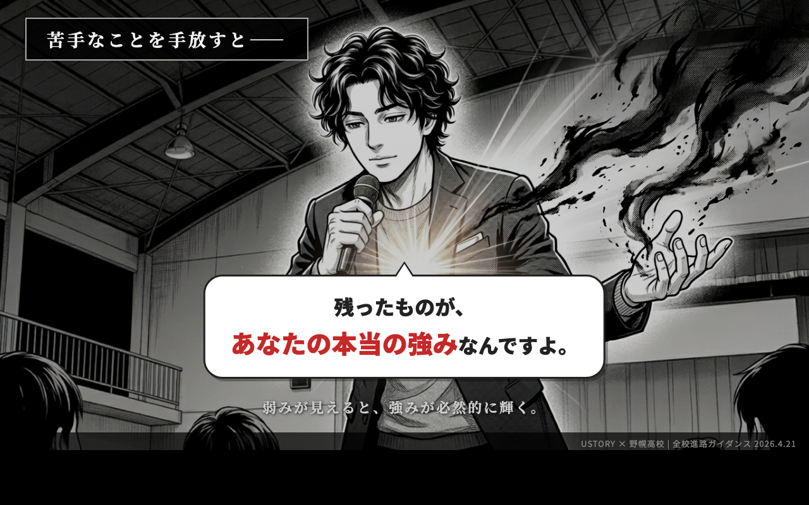
13 / 15 — 仮のものさしを握れ
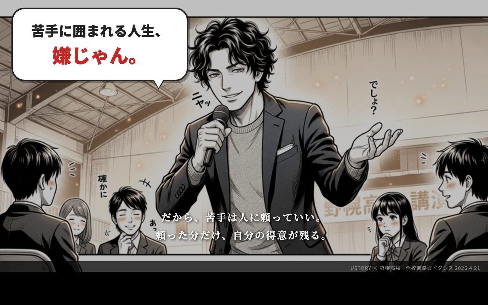
14 / 15 — 渡部由貴の自己開示
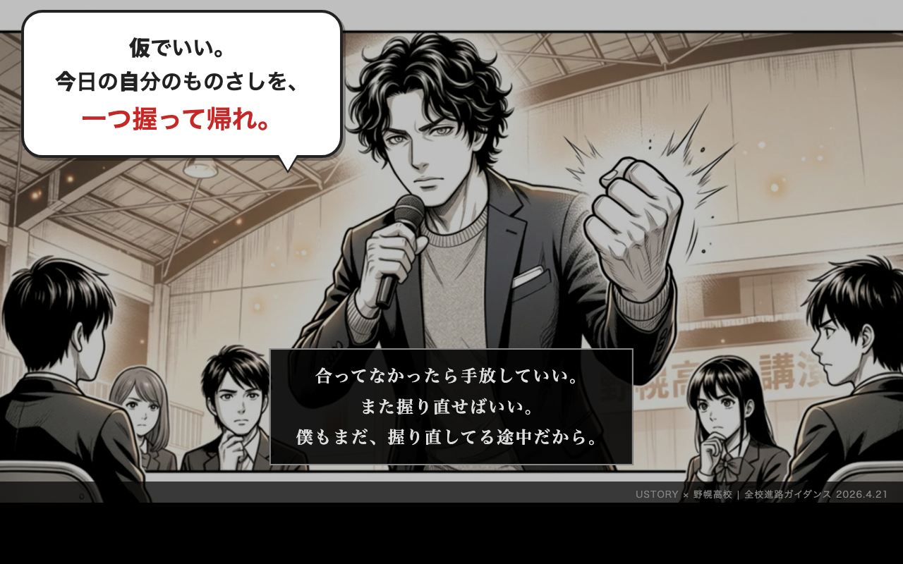
15 / 15 — 24369 + 締め
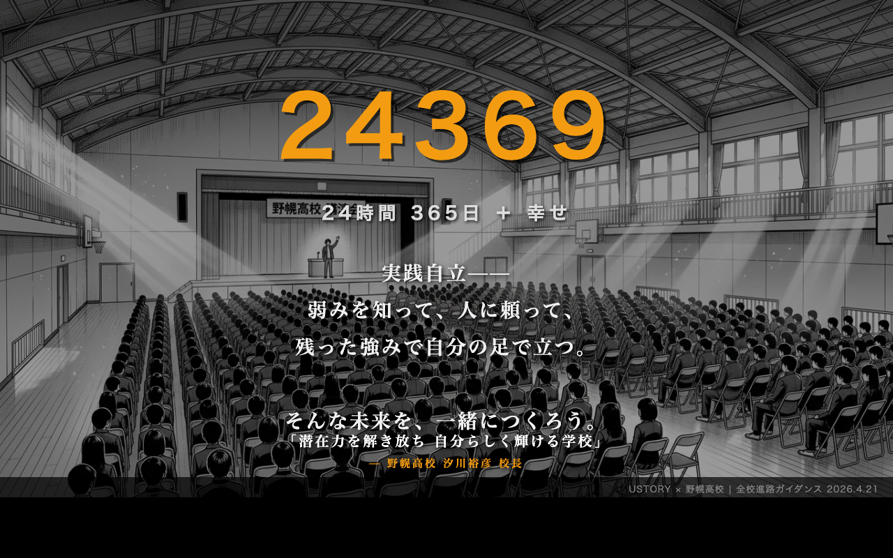